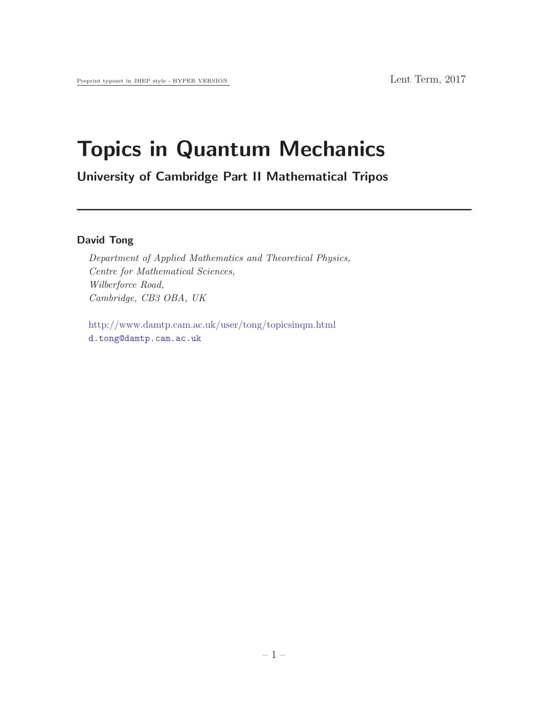

The Quantum Hall Effect
David Tong

1. The Basics
1.1 Introduction
1.2 The Classical Hall Effect
1.2.1 Classical Motion in a Magnetic Field
1.2.2 The Drude Model
1.3 Quantum Hall Effects
1.3.1 Integer Quantum Hall Effect
1.3.2 Fractional Quantum Hall Effect
1.4 Landau Levels
1.4.1 Landau Gauge
1.4.2 Turning on an Electric Field
1.4.3 Symmetric Gauge
1.5 Berry Phase
1.5.1 Abelian Berry Phase and Berry Connection
1.5.2 An Example: A Spin in a Magnetic Field
1.5.3 Particles Moving Around a Flux Tube
1.5.4 Non-Abelian Berry Connection
2. The Integer Quantum Hall Effect
2.1 Conductivity in Filled Landau Levels
2.1.1 Edge Modes
2.2 Robustness of the Hall State
2.2.1 The Role of Disorder
2.2.2 The Role of Gauge Invariance
2.2.3 An Aside: The Kubo Formula
2.2.4 The Role of Topology
2.3 Particles on a Lattice
2.3.1 TKNN Invariants
2.3.2 The Chern Insulator
2.3.3 Particles on a Lattice in a Magnetic Field
3. The Fractional Quantum Hall Effect
3.1 Laughlin States
3.1.1 The Laughlin Wavefunction
3.1.2 Plasma Analogy
3.1.3 Toy Hamiltonians
3.2 Quasi-Holes and Quasi-Particles
3.2.1 Fractional Charge
3.2.2 Introducing Anyons
3.2.3 Fractional Statistics
3.2.4 How to Detect an Anyon
3.2.5 Ground State Degeneracy and Topological Order
3.3 Other Filling Fractions
3.3.1 The Hierarchy
3.3.2 Composite Fermions
3.3.3 The Half-Filled Landau Level
3.3.4 Wavefunctions for Particles with Spin
4. Non-Abelian Quantum Hall States
4.1 Life in Higher Landau Levels
4.2 The Moore-Read State
4.2.1 Quasi-Holes
4.2.2 Majorana Zero Modes
4.2.3 Read-Rezayi States
4.3 The Theory of Non-Abelian Anyons
4.3.1 Fusion
4.3.2 The Fusion Matrix
4.3.3 Braiding
4.3.4 There is a Subject Called Topological Quantum Computing
5. Chern-Simons Theories
5.1 The Integer Quantum Hall Effect
5.1.1 The Chern-Simons Term
5.1.2 An Aside: Periodic Time Makes Things Hot
5.1.3 Quantisation of the Chern-Simons level
5.2 The Fractional Quantum Hall Effect
5.2.1 A First Look at Chern-Simons Dynamics
5.2.2 The Effective Theory for the Laughlin States
5.2.3 Chern-Simons Theory on a Torus
5.2.4 Other Filling Fractions and \(K\)-Matrices
5.3 Particle-Vortex Duality
5.3.1 The \(XY\)-Model and the Abelian-Higgs Model
5.3.2 Duality and the Chern-Simons Ginzburg-Landau Theory
5.3.3 Composite Fermions and the Half-Filled Landau Level
5.4 Non-Abelian Chern-Simons Theories
5.4.1 Introducing Non-Abelian Chern-Simons Theories
5.4.2 Canonical Quantisation and Topological Order
5.4.3 Wilson Lines
5.4.4 Chern-Simons Theory with Wilson Lines
5.4.5 Effective Theories of Non-Abelian Quantum Hall States
6. Edge Modes
6.1 Laughlin States
6.1.1 The View from the Wavefunction
6.1.2 The View from Chern-Simons Theory
6.1.3 The Chiral Boson
6.1.4 Electrons and Quasi-Holes
6.1.5 Tunnelling
6.2 The Bulk-Boundary Correspondence
6.2.1 Recovering the Laughlin Wavefunction
6.2.2 Wavefunction for Chern-Simons Theory
6.3 Fermions on the Boundary
6.3.1 The Free Fermion
6.3.2 Recovering the Moore-Read Wavefunction
6.4 Looking Forwards: More Conformal Field Theory
Back to Home